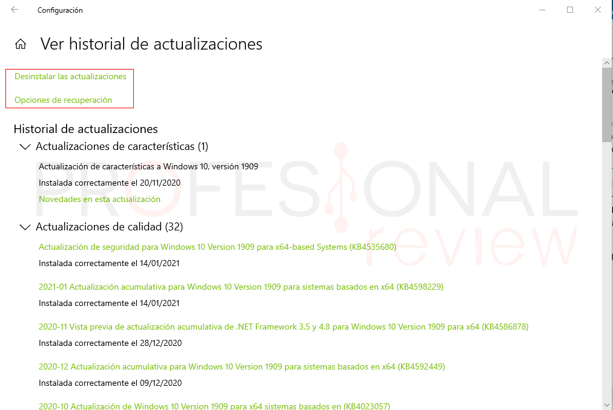
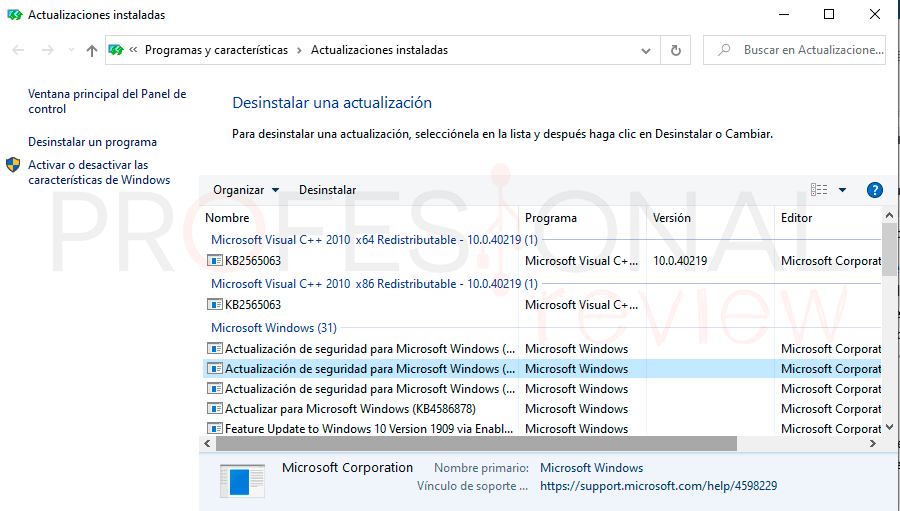
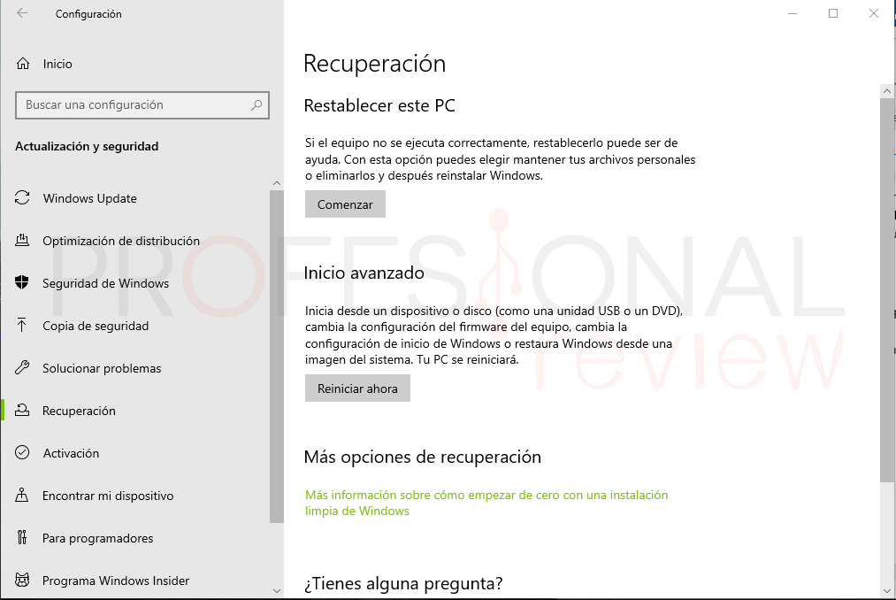

Actualizaciones de windows
Puede que un parche, o una actualización acumulativa, haya introducido fallos en nuestro sistema, fallos que seguramente Microsoft ya haya identificado y los haya solucionado. Por ello, se recomienda comprobar Windows Update para asegurarnos de que las últimas actualizaciones están instaladas en el sistema. Y también que estamos usando la última versión del sistema operativo.
Desinstalar actualizaciones
Si siguen existiendo errores una vez actualizado Windows, esposible que el error que nos molesta todavia no haya sido solucionado, en este caso es prudente volver a una version anterior de Windows para comprobar si el problema persiste.
Se debe dirigir a Inicio > Configuración > Actualizaciones y seguridad luego seleccione el texto que dice Ver historial de actualizaciones, a continuacion presione Desinstalar actualizaciones.

Desde la lista que aparece deberiamos eliminar una a una las más recientes para buscar estabilidad en el sistema.

Restablecer el equipo
Es posible que con el metodo anterior no se puedan desinstalar algunas actualizaciones mayores, en este caso la opcion mas sencilla es formatear el equipo.
Para llevar a cabo esta operacion se debe seguir la ruta Inicio > Configuración > Actualizaciones y seguridad > Recuperación > Restablecer este PC.
